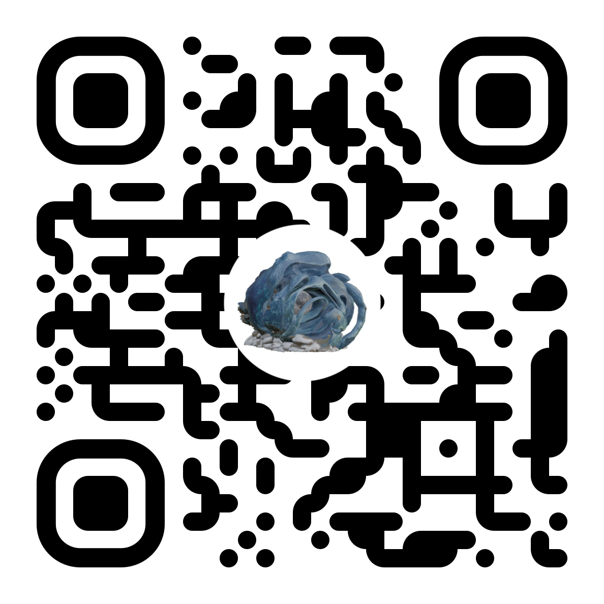

Uma intervenção performativa inspirada nas ligações da água em Esposende, desde memórias de cheias até às formas contemporâneas de relação, adaptação e transformação dos ecossistemas hídricos em tempos de incerteza.
Este ritual contemporâneo propõe um espaço de imaginação e coexistência com a água, ativando o antigo farol da Bonança (Ofir) durante a lua cheia como elemento simbólico de luz, orientação e memória.
Um momento de encontro entre corpo, território e água, onde se cruzam memória, presença e futuro.
A performative intervention inspired by the watery connections in Esposende, from flood memories to contemporary forms of relation, adaptation and transformation of water ecosystems in times of uncertainty.
This contemporary ritual creates a space for imagining watery coexistence, activating the old Bonança lighthouse (Ofir) under the full moon as a symbolic element of light, guidance and memory.
A moment of encounter between body, territory and water, where memory, presence and future intersect.
Loading...
This artwork is available on
iPhone
and
Android.
Use your phone camera to scan the QR code
and launch the Augmented Reality experience.